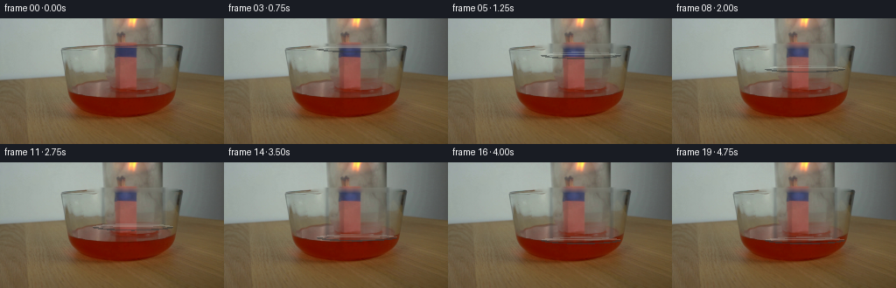
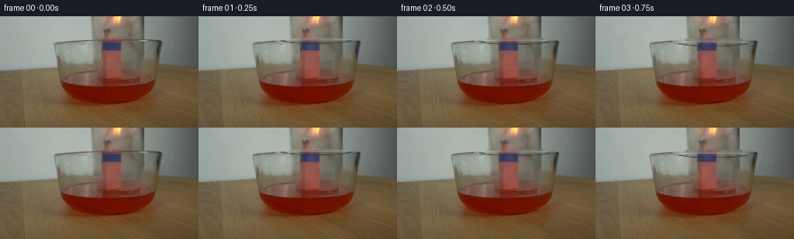

CODING AGENTS AS PIXEL WORLD MODELS
traex/DeepSeek-V4.1-Flash · 0163
点击播放 · 原生 RGB 像素
逐轮保存的候选
回放视频、检查图与代码变化。
每份候选均可单独播放。实际图片检查记录在下方工具轨迹中。
候选 01播放与检查图
点击播放 · 原生 RGB 像素

展开代码变化
--- 上一保存版本
+++ 本次保存版本
@@ -0,0 +1,237 @@
+from pathlib import Path
+
+import numpy as np
+from PIL import Image
+
+import artifact_io
+
+
+ROOT = Path(__file__).resolve().parent
+W, H, N, FPS = 256, 144, 20, 4
+
+
+def smoothstep(value):
+ value = np.clip(value, 0.0, 1.0)
+ return value * value * (3.0 - 2.0 * value)
+
+
+def harmonic_inpaint(image, mask, iterations=180):
+ """Fill a narrow occluder with a smooth interpolation of its surroundings."""
+ result = image.astype(np.float32).copy()
+ valid = ~mask
+ for _ in range(iterations):
+ padded = np.pad(result, ((1, 1), (1, 1), (0, 0)), mode="edge")
+ average = (
+ padded[:-2, 1:-1]
+ + padded[2:, 1:-1]
+ + padded[1:-1, :-2]
+ + padded[1:-1, 2:]
+ ) * 0.25
+ result[mask] = average[mask]
+ result[valid] = image[valid]
+ return result
+
+
+def make_scene_plate(frame):
+ """Remove the photographed lower rim while retaining the glass side walls."""
+ mask = np.zeros((H, W), dtype=bool)
+
+ # The old opening reads as a curved, three-pixel horizontal band.
+ yy, xx = np.mgrid[:H, :W]
+ old_rim = ((xx - 151.5) / 55.0) ** 2 + ((yy - 31.2) / 3.0) ** 2
+ mask |= (old_rim <= 1.0) & (yy >= 28) & (yy <= 35)
+
+ # A very thin dark lip continues along both sides of the opening.
+ mask |= (yy >= 28) & (yy <= 34) & (xx >= 113) & (xx <= 120)
+ mask |= (yy >= 28) & (yy <= 34) & (xx >= 181) & (xx <= 191)
+ return np.clip(harmonic_inpaint(frame, mask), 0, 255).astype(np.float32)
+
+
+def flame_layer(frame_index):
+ """Small, continuous flame motion; frame zero is deliberately untouched."""
+ yy, xx = np.mgrid[:H, :W]
+ phase = frame_index * 1.37
+ pulse = 0.5 + 0.5 * np.sin(phase)
+ sway = 1.15 * np.sin(phase * 0.73 + 0.4)
+ lift = 0.8 * np.sin(phase * 1.11)
+
+ # Teardrop-shaped blue base around the bundle of match heads.
+ cx = 143.3 + sway
+ base_y = 39.1 + lift
+ dx = (xx - cx) / (8.2 + 0.7 * pulse)
+ dy = (yy - base_y) / (5.5 + 0.6 * pulse)
+ blue_mask = np.clip(1.0 - dx * dx - dy * dy, 0.0, 1.0)
+ blue_mask = blue_mask * blue_mask * (3.0 - 2.0 * blue_mask)
+ blue_mask *= ((yy >= 32) & (yy <= 46))
+
+ # A faint warm tongue gives the small blue flames a readable, lit source.
+ tip_x = cx + 1.1 * np.sin(phase * 0.91)
+ tip_y = 32.7 + 0.75 * np.sin(phase * 1.23 + 1.0)
+ tip_dx = (xx - tip_x) / 5.1
+ tip_dy = (yy - tip_y) / 8.2
+ warm_mask = np.clip(1.0 - tip_dx * tip_dx - tip_dy * tip_dy, 0.0, 1.0)
+ warm_mask = warm_mask * warm_mask * (3.0 - 2.0 * warm_mask)
+ warm_mask *= ((yy >= 25) & (yy <= 41))
+
+ out = np.zeros_like(frame_index, dtype=np.float32)
+ blue = np.array([75.0, 125.0, 255.0], dtype=np.float32)
+ warm = np.array([255.0, 178.0, 74.0], dtype=np.float32)
+ return blue_mask[..., None] * blue, warm_mask[..., None] * warm
+
+
+def composite_flame(image, frame_index):
+ if frame_index == 0:
+ return image
+ blue, warm = flame_layer(frame_index)
+ phase = frame_index * 1.37
+ result = image.copy()
+ result += warm * (0.035 + 0.008 * np.sin(phase * 1.4))
+ result += blue * (0.095 + 0.012 * np.sin(phase + 0.7))
+
+ # Keep the original red match heads warm and alive without repainting them.
+ yy, xx = np.mgrid[:H, :W]
+ head_mask = (xx >= 131) & (xx <= 156) & (yy >= 44) & (yy <= 84)
+ head_glow = np.exp(-((xx - 143.5) / 16.0) ** 2) * np.exp(
+ -((yy - 67.0) / 24.0) ** 2
+ )
+ head_glow *= head_mask
+ result += head_glow[..., None] * np.array([5.5, 1.0, 0.2], dtype=np.float32)
+ return result
+
+
+def jar_overlay(rim_y):
+ """Analytic transparent jar extension from the photographed rim downward."""
+ yy, xx = np.mgrid[:H, :W]
+ rgba = np.zeros((H, W, 4), dtype=np.float32)
+ active = (yy >= 29) & (yy <= rim_y + 3.0) & (xx >= 114) & (xx <= 190)
+
+ # Glass body: a restrained cool tint and soft vertical reflections.
+ body = active & (yy <= rim_y + 0.5)
+ tint_alpha = np.zeros((H, W), dtype=np.float32)
+ tint_color = np.zeros((H, W, 3), dtype=np.float32)
+
+ tint_alpha += 0.035
+ tint_color += np.array([178.0, 190.0, 190.0], dtype=np.float32) * 0.035
+
+ left_edge = np.exp(-((xx - 117.5) / 2.2) ** 2)
+ right_edge = np.exp(-((xx - 186.5) / 2.1) ** 2)
+ left_sheen = np.exp(-((xx - 125.5) / 4.0) ** 2)
+ broad_sheen = np.exp(-((xx - 171.0) / 12.0) ** 2)
+ center_sheen = np.exp(-((xx - 149.0) / 19.0) ** 2)
+ fine_streak = (
+ np.exp(-((xx - 132.5) / 0.9) ** 2)
+ + 0.65 * np.exp(-((xx - 160.0) / 0.8) ** 2)
+ + 0.5 * np.exp(-((xx - 181.0) / 0.7) ** 2)
+ )
+ vertical = 0.88 + 0.12 * np.sin(yy * 0.19 + xx * 0.035)
+
+ edge_alpha = 0.31 * (left_edge + right_edge) * vertical
+ tint_alpha += edge_alpha
+ tint_color += np.array([48.0, 54.0, 58.0], dtype=np.float32) * edge_alpha[..., None]
+
+ sheen_alpha = (
+ 0.075 * left_sheen
+ + 0.105 * broad_sheen
+ + 0.025 * center_sheen
+ + 0.025 * fine_streak
+ ) * vertical
+ tint_alpha += sheen_alpha
+ tint_color += np.array([218.0, 224.0, 214.0], dtype=np.float32) * sheen_alpha[..., None]
+
+ tint_alpha = np.clip(tint_alpha, 0.0, 0.62)
+ safe_alpha = np.maximum(tint_alpha, 1e-6)
+ tint_color = tint_color / safe_alpha[..., None]
+ rgba[..., :3] = tint_color
+ rgba[..., 3] = tint_alpha * body
+
+ # Curved, slightly wider opening. Draw the ring in layers for a glassy lip.
+ outer = ((xx - 151.5) / 46.5) ** 2 + ((yy - rim_y) / 4.2) ** 2
+ inner = ((xx - 151.5) / 38.8) ** 2 + ((yy - rim_y) / 2.6) ** 2
+ ring = (outer <= 1.0) & (inner >= 1.0)
+ upper = (yy <= rim_y - 0.4) & ring
+ lower = (yy > rim_y - 0.4) & ring
+
+ rgba[..., :3][upper] = np.array([172.0, 181.0, 176.0], dtype=np.float32)
+ rgba[..., 3][upper] = 0.30
+ rgba[..., :3][lower] = np.array([54.0, 58.0, 57.0], dtype=np.float32)
+ rgba[..., 3][lower] = 0.56
+
+ # A narrow bright caustic on the near side of the lip.
+ caustic = (
+ ((xx - 151.5) / 42.5) ** 2 + ((yy - (rim_y - 1.35)) / 0.65) ** 2
+ )
+ caustic_mask = caustic <= 1.0
+ rgba[..., :3][caustic_mask] = np.array([220.0, 225.0, 215.0], dtype=np.float32)
+ rgba[..., 3][caustic_mask] = 0.27
+
+ return rgba
+
+
+def blend_rgba(image, rgba):
+ alpha = rgba[..., 3:4]
+ return image * (1.0 - alpha) + rgba[..., :3] * alpha
+
+
+def add_liquid_response(image, frame_index, rim_y):
+ if frame_index == 0:
+ return image
+ result = image.copy()
+ yy, xx = np.mgrid[:H, :W]
+ proximity = np.clip((rim_y - 62.0) / 28.0, 0.0, 1.0)
+ if proximity <= 0.0:
+ return result
+
+ # Local surface ripples grow only as the opening approaches the liquid.
+ surface = (yy >= 88) & (yy <= 96) & (xx >= 112) & (xx <= 191)
+ wave = np.sin((xx - 151.5) * 0.52 + frame_index * 1.1)
+ wave *= np.exp(-((xx - 151.5) / 37.0) ** 2)
+ wave *= np.exp(-((yy - 91.0) / 3.2) ** 2)
+ wave *= surface * proximity
+ result += wave[..., None] * np.array([8.0, -1.0, -2.0], dtype=np.float32)
+ return result
+
+
+def make_frames(first):
+ scene = make_scene_plate(first)
+ frames = []
+
+ for index in range(N):
+ if index == 0:
+ frames.append(first.copy())
+ continue
+
+ progress = (index / (N - 1) - 0.035) / 0.82
+ progress = smoothstep(progress)
+ rim_y = 31.1 + 58.0 * progress
+
+ frame = scene.copy()
+ frame = composite_flame(frame, index)
+ frame = add_liquid_response(frame, index, rim_y)
+ frame = blend_rgba(frame, jar_overlay(rim_y))
+
+ # A very light optical tint through the filled jar, strongest below the
+ # old rim where newly covered content is visible.
+ if rim_y > 31.2:
+ yy, xx = np.mgrid[:H, :W]
+ depth = np.clip((yy - 30.0) / 55.0, 0.0, 1.0)
+ inside = (xx >= 119) & (xx <= 185) & (yy >= 30) & (yy <= rim_y)
+ frame[inside] = frame[inside] * (1.0 - 0.035 * depth[inside, None]) + np.array(
+ [8.0, 10.0, 10.0], dtype=np.float32
+ ) * (0.035 * depth[inside, None])
+
+ frames.append(np.clip(frame, 0, 255).astype(np.uint8))
+
+ return np.stack(frames)
+
+
+def main():
+ first = np.asarray(Image.open(ROOT / "first_frame.png").convert("RGB"))
+ assert first.shape == (H, W, 3)
+ frames = make_frames(first)
+ assert frames.shape == (N, H, W, 3) and frames.dtype == np.uint8
+ assert np.array_equal(frames[0], first)
+ artifact_io.save(frames, ROOT)
+
+
+if __name__ == "__main__":
+ main()
候选 02播放与检查图
点击播放 · 原生 RGB 像素


展开代码变化
--- 上一保存版本
+++ 本次保存版本
@@ -38,12 +38,12 @@
# The old opening reads as a curved, three-pixel horizontal band.
yy, xx = np.mgrid[:H, :W]
- old_rim = ((xx - 151.5) / 55.0) ** 2 + ((yy - 31.2) / 3.0) ** 2
+ old_rim = ((xx - 151.5) / 35.0) ** 2 + ((yy - 31.2) / 3.0) ** 2
mask |= (old_rim <= 1.0) & (yy >= 28) & (yy <= 35)
# A very thin dark lip continues along both sides of the opening.
- mask |= (yy >= 28) & (yy <= 34) & (xx >= 113) & (xx <= 120)
- mask |= (yy >= 28) & (yy <= 34) & (xx >= 181) & (xx <= 191)
+ mask |= (yy >= 28) & (yy <= 34) & (xx >= 116) & (xx <= 121)
+ mask |= (yy >= 28) & (yy <= 34) & (xx >= 182) & (xx <= 188)
return np.clip(harmonic_inpaint(frame, mask), 0, 255).astype(np.float32)
@@ -103,7 +103,7 @@
"""Analytic transparent jar extension from the photographed rim downward."""
yy, xx = np.mgrid[:H, :W]
rgba = np.zeros((H, W, 4), dtype=np.float32)
- active = (yy >= 29) & (yy <= rim_y + 3.0) & (xx >= 114) & (xx <= 190)
+ active = (yy >= 29) & (yy <= rim_y + 3.0) & (xx >= 117) & (xx <= 187)
# Glass body: a restrained cool tint and soft vertical reflections.
body = active & (yy <= rim_y + 0.5)
@@ -113,15 +113,15 @@
tint_alpha += 0.035
tint_color += np.array([178.0, 190.0, 190.0], dtype=np.float32) * 0.035
- left_edge = np.exp(-((xx - 117.5) / 2.2) ** 2)
- right_edge = np.exp(-((xx - 186.5) / 2.1) ** 2)
+ left_edge = np.exp(-((xx - 118.0) / 1.9) ** 2)
+ right_edge = np.exp(-((xx - 185.5) / 1.8) ** 2)
left_sheen = np.exp(-((xx - 125.5) / 4.0) ** 2)
- broad_sheen = np.exp(-((xx - 171.0) / 12.0) ** 2)
+ broad_sheen = np.exp(-((xx - 169.0) / 10.0) ** 2)
center_sheen = np.exp(-((xx - 149.0) / 19.0) ** 2)
fine_streak = (
np.exp(-((xx - 132.5) / 0.9) ** 2)
+ 0.65 * np.exp(-((xx - 160.0) / 0.8) ** 2)
- + 0.5 * np.exp(-((xx - 181.0) / 0.7) ** 2)
+ + 0.5 * np.exp(-((xx - 180.0) / 0.7) ** 2)
)
vertical = 0.88 + 0.12 * np.sin(yy * 0.19 + xx * 0.035)
@@ -145,8 +145,8 @@
rgba[..., 3] = tint_alpha * body
# Curved, slightly wider opening. Draw the ring in layers for a glassy lip.
- outer = ((xx - 151.5) / 46.5) ** 2 + ((yy - rim_y) / 4.2) ** 2
- inner = ((xx - 151.5) / 38.8) ** 2 + ((yy - rim_y) / 2.6) ** 2
+ outer = ((xx - 151.5) / 35.5) ** 2 + ((yy - rim_y) / 4.0) ** 2
+ inner = ((xx - 151.5) / 28.9) ** 2 + ((yy - rim_y) / 2.45) ** 2
ring = (outer <= 1.0) & (inner >= 1.0)
upper = (yy <= rim_y - 0.4) & ring
lower = (yy > rim_y - 0.4) & ring
@@ -158,7 +158,7 @@
# A narrow bright caustic on the near side of the lip.
caustic = (
- ((xx - 151.5) / 42.5) ** 2 + ((yy - (rim_y - 1.35)) / 0.65) ** 2
+ ((xx - 151.5) / 31.5) ** 2 + ((yy - (rim_y - 1.35)) / 0.65) ** 2
)
caustic_mask = caustic <= 1.0
rgba[..., :3][caustic_mask] = np.array([220.0, 225.0, 215.0], dtype=np.float32)
@@ -200,9 +200,9 @@
frames.append(first.copy())
continue
- progress = (index / (N - 1) - 0.035) / 0.82
- progress = smoothstep(progress)
- rim_y = 31.1 + 58.0 * progress
+ linear = index / (N - 1)
+ progress = smoothstep(linear * 0.82 + 0.08 * linear * linear)
+ rim_y = 31.1 + 57.0 * progress
frame = scene.copy()
frame = composite_flame(frame, index)
@@ -214,7 +214,7 @@
if rim_y > 31.2:
yy, xx = np.mgrid[:H, :W]
depth = np.clip((yy - 30.0) / 55.0, 0.0, 1.0)
- inside = (xx >= 119) & (xx <= 185) & (yy >= 30) & (yy <= rim_y)
+ inside = (xx >= 120) & (xx <= 184) & (yy >= 30) & (yy <= rim_y)
frame[inside] = frame[inside] * (1.0 - 0.035 * depth[inside, None]) + np.array(
[8.0, 10.0, 10.0], dtype=np.float32
) * (0.035 * depth[inside, None])
候选 03播放与检查图
可观测工具轨迹
实际执行的命令与返回图片。
命令 1exit 0
/bin/bash -c "pwd && rg --files -g 'prompt.txt' -g 'GENERATION_RULES.md' -g 'first_frame.png' -g '*.py' -g '*.md' | sort"
命令 2exit 0
/bin/bash -c "sed -n '1,240p' prompt.txt"
命令 3exit 0
/bin/bash -c "sed -n '1,300p' GENERATION_RULES.md"
命令 4exit 0
/bin/bash -c "find . -maxdepth 2 -type f -printf '%p %s bytes\\n' | sort | sed -n '1,240p'"
命令 5exit 0
/bin/bash -c "sed -n '1,260p' artifact_io.py"
命令 6exit 0
/bin/bash -c "sed -n '1,260p' player_template.html"
命令 7exit 0
/bin/bash -c "python - <<'PY'
from PIL import Image
import numpy as np
im=Image.open('first_frame.png')
a=np.asarray(im)
print(im.mode, im.size, a.shape, a.dtype)
print('channels', [(int(a[...,i].min()),int(a[...,i].max()),float(a[...,i].mean()),float(a[...,i].std())) for i in range(3)])
# Most common exact colors
u,c=np.unique(a.reshape(-1,3),axis=0,return_counts=True)
for idx in np.argsort(c)[-30:][::-1]: print(tuple(u[idx]),int(c[idx]))
PY"命令 8exit 0
/bin/bash -c "python - <<'PY'
from PIL import Image
import numpy as np
from scipy import ndimage
im=np.asarray(Image.open('first_frame.png')).astype(np.float32)
# 64x36 downsample by 4x4 mean
x=im.reshape(36,4,64,4,3).mean((1,3))
# luminance chars
lum=x@np.array([.2126,.7152,.0722])
chars=' .,:;irsXA253hMHGS#9B&@'
idx=np.clip((lum/255*(len(chars)-1)).round().astype(int),0,len(chars)-1)
print('LUMINANCE')
for r in idx: print(''.join(chars[i] for i in r))
# hue/chroma chars
mx=x.max(2); mn=x.min(2); chrom=mx-mn
print('\\nCHROMA (R,G,B,K,W)')
for rr in range(36):
s=''
for cc in range(64):
R,G,B=x[rr,cc]
c=chrom[rr,cc]
if c<16: s += ' ' if mx[rr,cc]>175 else ('k' if mx[rr,cc]<55 else '.')
elif R>G*1.2 and R>B*1.4: s += 'R'
elif R>G*1.15 and G>B*1.4: s += 'O' if R>140 else 'r'
elif G>R*1.2 and G>B*1.2: s += 'G'
elif B>R*1.2 and B>G*1.05: s += 'B'
elif R>B*1.2 and G>B*1.2: s += 'Y'
else: s += '?'
print(s)
PY"命令 9exit 0
/bin/bash -c "python - <<'PY'
from PIL import Image
import numpy as np
from scipy import ndimage
im=np.asarray(Image.open('first_frame.png')).astype(float)
# print RGB at grid every 8 pixels, coarse classification letters plus luma
chars=' .:-=+*#%@'
for y in range(0,144,4):
row=''
for x in range(0,256,4):
p=im[y:y+4,x:x+4].mean((0,1)); l=p@np.array([.2126,.7152,.0722])
r,g,b=p
c=max(p)-min(p)
if c<12: ch=chars[min(9,int(l/25.6))]
elif r>g*1.45 and r>b*1.45: ch='R'
elif r>g*1.18 and g>b*1.35: ch='O'
elif g>r*1.2 and g>b*1.2: ch='G'
elif b>r*1.2 and b>g*1.08: ch='B'
elif b>r*1.1 and g>r*1.2: ch='C'
elif r>b*1.18 and g>b*1.2: ch='Y'
else: ch='?'
row+=ch
print(f'{y:3d} {row}')
print(' '+''.join(str((x//4)%10) for x in range(0,256,4)))
PY"命令 10exit 0
/bin/bash -c "python - <<'PY'
from PIL import Image
import numpy as np
from scipy import ndimage
im=np.asarray(Image.open('first_frame.png')).astype(np.float32)
# KMeans 16 colors
from sklearn.cluster import KMeans
pix=im.reshape(-1,3)
km=KMeans(12,random_state=0,n_init=10).fit(pix[::3])
cent=km.cluster_centers_
lab=km.predict(pix).reshape(144,256)
print('centers')
for i,c in enumerate(cent): print(i, np.round(c).astype(int), (lab==i).sum())
# map every 2x2 majority label
chars='0123456789AB'
for y in range(0,144,4):
row=''
for x in range(0,256,4):
z=lab[y:y+4,x:x+4].ravel(); row += chars[np.bincount(z,minlength=12).argmax()]
print(f'{y:3d} {row}')
PY"命令 11exit 0
/bin/bash -c "python - <<'PY'
from PIL import Image
import numpy as np
im=np.asarray(Image.open('first_frame.png')).astype(np.float32)
# RGB means by spatial regions and sample horizontal/vertical changes
for name,ys,xs in [
('bg',(0,70),(0,100)),('wallright',(0,70),(200,256)),('table',(128,144),(0,256)),
('bowlleft',(72,120),(0,70)),('liquid',(92,118),(70,200)),('flames',(28,64),(130,165)),('jar?',(30,70),(100,120))]:
r=im[ys[0]:ys[1],xs[0]:xs[1]]
print(name, 'mean',r.mean((0,1)).round(1),'std',r.std((0,1)).round(1),'minmax',r.min((0,1)).round(1),r.max((0,1)).round(1))
# runs at selected rows by color similarity? print rgb every 8 x
for y in [20,30,40,50,60,68,72,76,80,84,88,92,96,100,108,116,124,132,140]:
print('\\ny',y)
for x in range(0,256,16):
p=im[max(0,y-1):y+2,max(0,x-1):x+2].mean((0,1))
print(x, tuple(p.round().astype(int)),end='; ')
print()
PY"命令 12exit 0
/bin/bash -c "python - <<'PY'
from PIL import Image
import numpy as np
im=Image.open('first_frame.png')
# upscale nearest for local analysis files only
im.resize((1024,576),Image.Resampling.NEAREST).save('.tmp/first_x4.png')
# make x/y coordinate grid? no visual; save crops at x4
for name,box in [('flames',(115,20,185,80)),('glass',(90,10,150,90)),('bowl',(50,60,220,130))]:
im.crop(box).resize(((box[2]-box[0])*8,(box[3]-box[1])*8),Image.Resampling.NEAREST).save(f'.tmp/{name}.png')
print('saved')
PY"命令 13exit 0
/bin/bash -c "python - <<'PY'
from PIL import Image
import numpy as np
im=np.asarray(Image.open('first_frame.png')).astype(float)
# print a contour-ish high res 128 cols x 72 rows classification focused left x 90-190, y 10-80, sample 1 or 2 pix
# also gradients; list distinct boundaries from color transitions
for y in range(12,84,2):
row=''
for x in range(90,190,2):
p=im[y:y+2,x:x+2].mean((0,1)); r,g,b=p; l=p@np.array([.2126,.7152,.0722])
# classifications manual
if b-r>18 and b-g>10: ch='B' # blue
elif r>g*1.35 and r>b*1.5: ch='R'
elif r>g*1.12 and g>b*1.25: ch='o'
elif g-r>6 and g-b>5: ch='g'
elif max(p)-min(p)<10: ch=' ' if l>175 else ('.' if l>125 else (':' if l>85 else '#'))
else: ch='?'
row+=ch
print(f'{y:02d} {row}')
PY"命令 14exit 0
/bin/bash -c "python - <<'PY'
from PIL import Image
import numpy as np
from scipy import ndimage
im=np.asarray(Image.open('first_frame.png')).astype(np.float32)
# gaussian smoothed gradient; report dominant edges as blocks 2x2
sm=ndimage.gaussian_filter(im,(1.0,1.0,0))
g=np.sqrt(ndimage.sobel(sm[...,0],1)**2+ndimage.sobel(sm[...,0],0)**2+ndimage.sobel(sm[...,1],1)**2+ndimage.sobel(sm[...,1],0)**2+ndimage.sobel(sm[...,2],1)**2+ndimage.sobel(sm[...,2],0)**2)
# 128x72 blocks max/mean edge char
x=g.reshape(72,2,128,2).max((1,3))
chars=' .:-=+*#%@'
for r in range(72):
row=''.join(chars[min(9,int(v/80*9))] for v in x[r])
print(f'{r*2:03d} {row}')
PY"命令 15exit 0
/bin/bash -c "python - <<'PY'
import cv2, numpy as np
im=cv2.imread('first_frame.png')
g=cv2.cvtColor(im,cv2.COLOR_BGR2GRAY)
for lo,hi in [(20,50),(40,100),(80,160)]:
e=cv2.Canny(g,lo,hi)
print('\\nCanny',lo,hi,'edges',e.sum()//255)
lines=cv2.HoughLinesP(e,1,np.pi/180,threshold=15,minLineLength=15,maxLineGap=3)
if lines is not None:
ll=[]
for l in lines[:,0]:
x1,y1,x2,y2=map(int,l); ln=((x2-x1)**2+(y2-y1)**2)**.5
ll.append((round(ln,1),x1,y1,x2,y2))
for q in sorted(ll,reverse=True)[:30]: print(q)
PY"命令 16exit 0
/bin/bash -c "python - <<'PY'
from PIL import Image
import numpy as np
im=np.asarray(Image.open('first_frame.png')).astype(np.float32)
# RGB rows for likely jar region, 4x4 means, each cell tuple-ish class and print min/max
# sample exact representative colors and segmentation values at horizontal x ranges
for y in [0,10,20,25,28,30,32,34,40,50,60,68,70,72]:
print('\\ny',y)
for a,b in [(0,60),(60,90),(90,110),(110,125),(125,140),(140,155),(155,170),(170,190),(190,205),(205,225),(225,256)]:
p=im[y:y+2,a:b].mean((0,1)); print(f'{a:3}-{b:3}:{tuple(np.round(p).astype(int))}',end=' ')
print()
PY"命令 17exit 0
/bin/bash -c "python - <<'PY'
from PIL import Image
import numpy as np
im=np.asarray(Image.open('first_frame.png')).astype(float)
# print 2x2 luminance and selected RGB in jar suspected region, coordinates
chars=' .:-=+*#%@'
for y in range(0,72,2):
row=''
for x in range(100,210,2):
p=im[y:y+2,x:x+2].mean((0,1)); l=p@np.array([.2126,.7152,.0722])
# map luma to char
row+=chars[min(9,max(0,int((l-45)/21)))]
print(f'{y:02d} {row}')
PY"命令 18exit 0
/bin/bash -c "python - <<'PY'
from PIL import Image
import numpy as np
im=np.asarray(Image.open('first_frame.png')).astype(float)
# identify candidate glass boundaries via edges around likely x=85..205, y=0..90
# Print mean abs diff x-1 and y-1 for selected rows/cols
sm=im
for y in [28,30,32,34,44,58,60,62,64,66,68,70]:
dx=np.abs(sm[y,1:]-sm[y,:-1]).mean(1)
top=np.argsort(dx)[-15:][::-1]
print('y',y,'dx',[(int(x+1),round(float(dx[x]),1)) for x in top])
for x in [85,90,95,100,110,120,130,140,150,160,170,180,190,200,205,210]:
dy=np.abs(sm[1:,x]-sm[:-1,x]).mean(1)
top=np.argsort(dy)[-10:][::-1]
print('x',x,'dy',[(int(y+1),round(float(dy[y]),1)) for y in top])
PY"命令 19exit 0
/bin/bash -c "python - <<'PY'
from PIL import Image
import numpy as np
from scipy import ndimage
im=np.asarray(Image.open('first_frame.png')).astype(float)
r,g,b=np.moveaxis(im,-1,0)
masks={
'red_dark':(r>70)&(r>g*1.6)&(r>b*2.0),
'red_bright':(r>120)&(r>g*1.35)&(r>b*1.4),
'orange_yellow':(r>130)&(g>55)&(r>g*1.25)&(g>b*1.25),
'blue':(b>r*1.15)&(b>g*1.05),
'very_light':(r>180)&(g>180)&(b>170),
'gray_glass':(np.abs(r-g)<12)&(np.abs(g-b)<12)&(r>120)&(r<190),
}
for name,m in masks.items():
lab,n=ndimage.label(m)
sizes=ndimage.sum(m,lab,range(1,n+1))
ids=np.argsort(sizes)[-20:][::-1]
print('\\n',name,'pixels',m.sum(),'components',n)
for idx in ids:
if sizes[idx]<3: continue
yy,xx=np.where(lab==idx+1)
print('size',int(sizes[idx]),'bbox',int(xx.min()),int(yy.min()),int(xx.max()),int(yy.max()),'cent',round(xx.mean(),1),round(yy.mean(),1))
PY"命令 20exit 0
/bin/bash -c "python - <<'PY'
from PIL import Image
import numpy as np
im=np.asarray(Image.open('first_frame.png')).astype(np.float32)
# Analyze horizontal RGB profiles and print x/y boundary transitions with luma
# Find right jar boundary likely x~203? and left ~119? inspect colors across x at y rows
for y in [0,5,10,15,20,25,28,30,31,32,33,34,35,40,45,50,55,58,60,61,62,63,64,65,66,67,68,69,70,71,72]:
vals=[]
for x in [80,90,100,110,115,118,119,120,121,122,125,130,135,140,145,150,155,160,165,170,175,180,185,190,195,200,203,204,205,206,207,208,209,210,215]:
p=im[y,x]; vals.append(f'{x}:{p[0]:.0f},{p[1]:.0f},{p[2]:.0f}')
print(f'y{y}: '+' '.join(vals))
PY"命令 21exit 0
/bin/bash -c "python - <<'PY'
from PIL import Image
import numpy as np
im=np.asarray(Image.open('first_frame.png')).astype(int)
for x in [125,130,135,140,143,145,148,150,152,155,160]:
print('\\nx',x)
for y in range(0,96,2):
p=im[y,x]
print(f'{y:02d}:{p[0]:3},{p[1]:3},{p[2]:3}',end=' ')
if y%16==14: print()
print()
PY"命令 22exit 0
/bin/bash -c "python - <<'PY'
from PIL import Image
import numpy as np
im=np.asarray(Image.open('first_frame.png')).astype(np.float32)
# print background-ish lines at left/right and segment via high-level color palettes
# analyze masks for jar based on dark vertical edges
for x in range(180,220):
p=im[:70,x]
dark=(p.mean(1)<100).sum(); blue=(p[:,2]-p[:,0]>15).sum(); red=((p[:,0]>p[:,1]*1.5)&(p[:,0]>70)).sum()
print(x, 'dark',dark,'blue',blue,'red',red,'mean',np.round(p.mean(0),0).astype(int))
PY"命令 23exit 0
/bin/bash -c "python - <<'PY'
from PIL import Image
import numpy as np
im=np.asarray(Image.open('first_frame.png')).astype(np.float32)
# characterize regions: x 80-205 y 0-90, find dominant horizontal edge at each x
for y in range(0,92,2):
p=im[y:y+2]
# compare mean left [0:115], middle [120:205], right [210:]
print(y, 'L',tuple(p[:,0:115].mean((0,1)).astype(int)), 'M',tuple(p[:,120:205].mean((0,1)).astype(int)), 'R',tuple(p[:,210:].mean((0,1)).astype(int)))
PY"命令 24exit 0
/bin/bash -c "python - <<'PY' import importlib.util for m in ['numpy','PIL','scipy','cv2','skimage','imageio','torch']: print(m, bool(importlib.util.find_spec(m))) PY"
命令 25exit 0
/bin/bash -c "python - <<'PY'
from PIL import Image
import numpy as np
im=np.asarray(Image.open('first_frame.png')).astype(float)
# fit rows to a large rectangular object? Print row segment means for each x in 0..256 at 4px steps for y 0..70
# classify hue and luma compactly; each char unique-ish
for y in range(0,72,2):
print(f'{y:02d}', end=' ')
for x in range(0,256,4):
p=im[y:y+2,x:x+4].mean((0,1)); r,g,b=p; l=p@np.array([.2126,.7152,.0722])
# char based on luma for grayscale, lower/upper hue for colors
if max(p)-min(p)<13:
ch=' .:-=+*#%@'[min(9,int(l/25.6))]
elif b>r*1.2 and b>g*1.1: ch='B'
elif r>g*1.4 and r>b*1.5: ch='R'
elif r>g*1.1 and g>b*1.25: ch='o'
elif g>r*1.05 and g>b*1.1: ch='g'
else: ch='?'
print(ch,end='')
print()
PY"命令 26exit 0
/bin/bash -c 'python generate.py'
命令 27exit 0
/bin/bash -c "python - <<'PY'
from PIL import Image
import numpy as np
from pathlib import Path
fs=sorted(Path('frames').glob('*.png'))
a=np.stack([np.asarray(Image.open(f)) for f in fs])
print('frames',a.shape,a.dtype,'first exact',np.array_equal(a[0],np.asarray(Image.open('first_frame.png').convert('RGB'))))
for i in [0,1,2,3,4,5,7,9,11,13,15,17,19]:
im=Image.fromarray(a[i])
im.resize((768,432),Image.Resampling.NEAREST).save(f'.tmp/f{i:02d}_x3.png')
# bbox changes relative prev
if i:
d=np.max(np.abs(a[i].astype(int)-a[i-1].astype(int)),2)
yy,xx=np.where(d>0)
print(i,'changed',len(xx),'bbox', (xx.min(),yy.min(),xx.max(),yy.max()) if len(xx) else None,'max',d.max())
print('inspection',Image.open('inspection.png').size)
PY"命令 28exit 0
/bin/bash -c "python - <<'PY'
from PIL import Image
import numpy as np
from pathlib import Path
a=np.stack([np.asarray(Image.open(f)) for f in sorted(Path('frames').glob('*.png'))]).astype(float)
# change from scene base excluding flame, per y range and total
for i in [1,2,3,5,7,9,11,13,15,17,19]:
prev=a[i-1] if i else a[0]
d=np.abs(a[i]-prev).mean(2)
print('\\nframe',i,'mean diff',d.mean(),'sum',d.sum())
for y0,y1 in [(0,24),(24,31),(31,45),(45,60),(60,75),(75,90),(90,100),(100,144)]:
print((y0,y1),round(float(d[y0:y1].mean()),2),end='; ')
print('\\n')
# rough row profile of current frame 19 vs frame0
for i in [0,5,10,15,19]:
im=Image.fromarray(a[i].astype(np.uint8))
# print jar rim y by local dark horizontal edge x120:185
g=a[i].mean(2)
print('frame',i)
for y in range(25,100):
# average abs dy within center
v=np.abs(g[y,120:185]-g[y-1,120:185]).mean()
if v>8: print(y,round(v,1),end=' ')
print()
PY"命令 29exit 0
/bin/bash -c "python - <<'PY'
from PIL import Image
import numpy as np
from pathlib import Path
# create comparison sheet with source and frames 1,3,5,8,11,14,17,19, each 2x
inds=[0,1,2,3,5,8,11,14,17,19]
ims=[Image.open('first_frame.png') if i==0 else Image.open(f'frames/{i:02d}.png') for i in inds]
canvas=Image.new('RGB',(256*5,144*2),(15,15,15))
from PIL import ImageDraw
d=ImageDraw.Draw(canvas)
for k,(i,im) in enumerate(zip(inds,ims)):
x=(k%5)*256;y=(k//5)*144
canvas.paste(im,(x,y));d.text((x+4,y+4),f'{i}',fill=(255,255,0))
canvas.resize((1280,576),Image.Resampling.NEAREST).save('.tmp/compare.png')
# numeric diff per frame to first; color mean bounding regions
base=np.asarray(Image.open('first_frame.png')).astype(float)
for i in range(20):
a=np.asarray(Image.open(f'frames/{i:02d}.png')).astype(float)
d=np.abs(a-base).mean(2)
print(i,'mean',round(float(d.mean()),2),'gt5',int((d>5).sum()),'gt20',int((d>20).sum()),'bbox',end=' ')
yy,xx=np.where(d>5)
print((int(xx.min()),int(yy.min()),int(xx.max()),int(yy.max())) if len(xx) else None)
PY"命令 30exit 0
/bin/bash -c "python generate.py && python - <<'PY'
from PIL import Image, ImageDraw
import numpy as np
from pathlib import Path
fs=sorted(Path('frames').glob('*.png'))
a=np.stack([np.asarray(Image.open(f)) for f in fs])
base=np.asarray(Image.open('first_frame.png')).astype(float)
print('shape',a.shape,'first exact',np.array_equal(a[0],np.asarray(Image.open('first_frame.png').convert('RGB'))))
for i in range(20):
d=np.abs(a[i].astype(float)-base).mean(2)
yy,xx=np.where(d>5)
print(i,'mean',round(float(d.mean()),3),'gt5',len(xx),'gt20',int((d>20).sum()),'bbox',(int(xx.min()),int(yy.min()),int(xx.max()),int(yy.max())) if len(xx) else None)
# horizontal rim profiles to ensure it descends
for i in [0,2,5,8,11,14,17,19]:
g=a[i].astype(float).mean(2)
vals=[]
for y in range(28,96):
v=np.abs(g[y,122:182]-g[y-1,122:182]).mean()
if v>8: vals.append((y,round(float(v),1)))
print('rim',i,vals)
# sheets
inds=[0,1,2,3,5,8,11,14,17,19]
canvas=Image.new('RGB',(256*5,165*2),(15,15,15));d=ImageDraw.Draw(canvas)
for k,i in enumerate(inds):
x=(k%5)*256;y=(k//5)*165
canvas.paste(Image.fromarray(a[i]),(x,y+21));d.text((x+4,y+4),f'frame {i:02d}',fill=(255,255,0))
canvas.save('.tmp/compare2.png')
PY"命令 31exit 0
/bin/bash -c "python - <<'PY'
from PIL import Image
import numpy as np
from pathlib import Path
# make selected frame strip at 4x with original for close analysis
inds=[0,2,5,8,11,14,17,19]
canvas=Image.new('RGB',(256*4,(144+22)*2),(20,20,20))
from PIL import ImageDraw
d=ImageDraw.Draw(canvas)
for k,i in enumerate(inds):
x=(k%4)*256;y=(k//4)*(144+22)
im=Image.open(f'frames/{i:02d}.png')
canvas.paste(im,(x,y+22));d.text((x+4,y+4),f'{i:02d} {i/4:.2f}s',fill=(255,255,0))
canvas.resize((2048,664),Image.Resampling.NEAREST).save('.tmp/strip_x2.png')
PY"命令 32exit 0
/bin/bash -c "python - <<'PY'
from PIL import Image
import numpy as np
# Compare inferred transparent region with actual background. We need know what's under glass.
# Estimate jar interior reference from clean wall by horizontal interpolation x~100/210, row per row; inspect difference in middle vs edges.
a=np.asarray(Image.open('first_frame.png')).astype(float)
for y in [0,10,20,25,28,30,32,34,40,50,60,68]:
left=a[y,95:110].mean(0); right=a[y,190:205].mean(0); mid=a[y,125:180].mean(0)
print(y,'left',np.round(left).astype(int),'mid',np.round(mid).astype(int),'right',np.round(right).astype(int))
PY"命令 33exit 0
/bin/bash -c "python - <<'PY'
from PIL import Image
import numpy as np
# print raw RGB at x around supposed left edge for rows, see smooth boundary
im=np.asarray(Image.open('first_frame.png')).astype(int)
for y in range(0,72,4):
print('\\ny',y)
for x in range(100,211,2):
p=im[y,x]; print(f'{x}:{p[0]:3}/{p[1]:3}/{p[2]:3}',end=' ')
print()
PY"命令 34exit 0
/bin/bash -c "python - <<'PY'
from PIL import Image
import numpy as np
from pathlib import Path
a=np.stack([np.asarray(Image.open(f)) for f in sorted(Path('frames').glob('*.png'))]).astype(float)
for i in range(1,20):
d=np.abs(a[i]-a[i-1]).mean(2)
print(i,'mean',round(float(d.mean()),4),'gt5',int((d>5).sum()),'gt20',int((d>20).sum()),'max',round(float(d.max()),1))
print('selected pixels RGB')
for i in [0,1,2,5,10,15,19]:
print(i,'flame-top',np.round(a[i,4,151]).astype(int),'blue',np.round(a[i,38,143]).astype(int),'redcol',np.round(a[i,60,145]).astype(int),'rimcenter',end=' ')
# max dark row in center
g=a[i].mean(2); vals=[]
for y in range(28,96): vals.append((float(np.abs(g[y,122:182]-g[y-1,122:182]).mean()),y))
print(sorted(vals,reverse=True)[:4])
PY"命令 35exit 0
/bin/bash -c "ls -lah && ls -lah frames | sed -n '1,26p' && du -h pixels.npz index.html inspection.png transition_check.png"
命令 36exit 0
/bin/bash -c "python - <<'PY'
import json,base64,numpy as np
from pathlib import Path
from PIL import Image
# Verify player payload reconstructs exactly and frame0 matches source.
s=Path('index.html').read_text(); start=s.index('const DATA=')+11; end=s.index(',W=DATA.width')
d=json.loads(s[start:end])
def unpack(v):
b=base64.b64decode(v); return np.frombuffer(b,dtype='<u4').copy()
frames=[unpack(d['first'])]
for enc in d['deltas']:
f=frames[-1].copy(); p=unpack(enc); i=0
while i<len(p):
st,cnt=int(p[i]),int(p[i+1]); i+=2; f[st:st+cnt]=p[i:i+cnt]; i+=cnt
frames.append(f)
a=np.stack(frames).reshape(20,144,256)
rgb=np.stack([(a>>16)&255,(a>>8)&255,a&255],2).astype(np.uint8)
src=np.asarray(Image.open('first_frame.png').convert('RGB'))
print('payload shape',rgb.shape,'frame0 exact',np.array_equal(rgb[0],src),'all frames exact',np.array_equal(rgb,np.stack([np.asarray(Image.open(f'frames/{i:02d}.png')) for i in range(20)])))
print('dims/fps',d['width'],d['height'],d['frames'],d['fps'],'caption chars',len(d['caption']))
print('nonconstant frames',int((rgb.reshape(20,-1).std(1)>0).sum()))
PY"命令 37exit 0
/bin/bash -c "python - <<'PY'
import json,base64,numpy as np
from pathlib import Path
from PIL import Image
s=Path('index.html').read_text(); start=s.index('const DATA=')+11; end=s.index(',W=DATA.width')
d=json.loads(s[start:end])
def unpack(v): return np.frombuffer(base64.b64decode(v),dtype='<u4').copy()
frames=[unpack(d['first'])]
for enc in d['deltas']:
f=frames[-1].copy(); p=unpack(enc); i=0
while i<len(p):
st,cnt=int(p[i]),int(p[i+1]); i+=2; f[st:st+cnt]=p[i:i+cnt]; i+=cnt
frames.append(f)
a=np.stack(frames).reshape(20,144,256)
rgb=np.stack([(a>>16)&255,(a>>8)&255,a&255],axis=-1).astype(np.uint8)
src=np.asarray(Image.open('first_frame.png').convert('RGB'))
disk=np.stack([np.asarray(Image.open(f'frames/{i:02d}.png')) for i in range(20)])
print('payload shape',rgb.shape,'frame0 exact',np.array_equal(rgb[0],src),'all frames exact',np.array_equal(rgb,disk))
print('dims/fps',d['width'],d['height'],d['frames'],d['fps'])
PY"命令 38exit 0
/bin/bash -c "python - <<'PY'
from PIL import Image
import numpy as np
im=np.asarray(Image.open('first_frame.png')).astype(int)
for y in [0,8,16,24,28,30,32,34,36,40,44,48,52,56,60,64,68,72,80,88]:
print('\\ny',y)
for x in list(range(55,91,3))+list(range(105,121,2))+list(range(180,215,2)):
p=im[y,x];print(f'{x}:{p[0]:3}/{p[1]:3}/{p[2]:3}',end=' ')
print()
PY"命令 39exit 0
/bin/bash -c "python - <<'PY'
from PIL import Image
import numpy as np
im=np.asarray(Image.open('first_frame.png')).astype(float)
# search for horizontal uniform plateau widths / piecewise constant background to find jar boundaries.
# For each row, mean local 5-pixel horizontal variance and list longest low variance regions inside x70:220
for y in range(0,72,4):
row=im[y]
var=np.array([row[max(0,x-1):x+2].var(0).mean() for x in range(256)])
good=var<40
# runs
changes=np.diff(np.r_[False,good,False].astype(int)); starts=np.where(changes==1)[0]; ends=np.where(changes==-1)[0]
runs=sorted([(e-s,s,e) for s,e in zip(starts,ends) if e>70 and s<220],reverse=True)[:6]
print(y,runs)
PY"命令 40exit 0
/bin/bash -c "python - <<'PY'
from PIL import Image
import numpy as np
im=np.asarray(Image.open('first_frame.png')).astype(float)
# Analyze likely jar outer boundaries. Edge x=116 is consistent; right boundary perhaps 209 at row32 and 186 elsewhere.
# Estimate interior horizontal gradient after subtracting smooth left/right baseline.
for y in [0,8,16,24,28,30,32,34,36,40,44,48,52,56,60]:
r=im[y]
grad=np.abs(np.diff(r.mean(1)))
print('\\ny',y)
print('left',[(x+1,round(float(grad[x]),1)) for x in np.argsort(grad[100:140])[-10:]+100])
print('right',[(x+1,round(float(grad[x]),1)) for x in np.argsort(grad[170:220])[-10:]+170])
PY"命令 41exit 0
/bin/bash -c "python - <<'PY'
from PIL import Image
import numpy as np
im=np.asarray(Image.open('first_frame.png')).astype(float)
# Fit a robust left-edge x per row as strongest adjacent gradient in 114..123; right strongest 183..190 or 202..211
for y in range(0,72,2):
grad=np.abs(np.diff(im[y].mean(1)))
l=114+int(np.argmax(grad[114:124])); r=182+int(np.argmax(grad[182:191]))
print(f'{y:02d} L{l}({grad[l]:.1f}) R{r}({grad[r]:.1f}) altR{202+int(np.argmax(grad[202:211]))}({grad[202+int(np.argmax(grad[202:211]))]:.1f})')
PY"命令 42exit 0
/bin/bash -c "python - <<'PY'
from PIL import Image
import numpy as np
from pathlib import Path
# Validate all outputs and summarize color/luma trajectory
a=np.stack([np.asarray(Image.open(f'frames/{i:02d}.png')) for i in range(20)])
print('shape/dtype',a.shape,a.dtype)
print('opening identical',np.array_equal(a[0],np.asarray(Image.open('first_frame.png').convert('RGB'))))
for name,sl in [('full',(slice(None),slice(None))),('jar',(slice(25,94),slice(114,190))),('flames',(slice(27,45),slice(128,159))),('liquid',(slice(87,98),slice(112,192)))]:
ys,xs=sl; reg=a[:,ys,xs].astype(float)
print(name,'mean rgb frames 0/10/19',np.round(reg[[0,10,19]].mean((1,2)),1).tolist())
# GIF preview from actual frames
ims=[Image.fromarray(x) for x in a]
ims[0].save('.tmp/preview.gif',save_all=True,append_images=ims[1:],duration=250,loop=0,optimize=False)
# small contact sheet final artifact already written; verify size
for f in ['index.html','pixels.npz','inspection.png','transition_check.png','frames/00.png','frames/19.png']:
p=Path(f);print(f,p.stat().st_size)
PY"命令 43exit 0
/bin/bash -c "python -m py_compile generate.py && python generate.py && python - <<'PY'
import json,base64,numpy as np
from pathlib import Path
from PIL import Image
# Re-run end-to-end and verify regenerated disk frames plus embedded player deltas.
a=np.stack([np.asarray(Image.open(f'frames/{i:02d}.png')) for i in range(20)])
first=np.asarray(Image.open('first_frame.png').convert('RGB'))
assert a.shape==(20,144,256,3) and a.dtype==np.uint8 and np.array_equal(a[0],first)
s=Path('index.html').read_text(); data=json.loads(s[s.index('const DATA=')+11:s.index(',W=DATA.width')])
def unpack(v): return np.frombuffer(base64.b64decode(v),dtype='<u4').copy()
p=[unpack(data['first'])]
for enc in data['deltas']:
f=p[-1].copy(); z=unpack(enc); i=0
while i<len(z):
st,c=int(z[i]),int(z[i+1]);i+=2;f[st:st+c]=z[i:i+c];i+=c
p.append(f)
q=np.stack(p).reshape(20,144,256)
r=np.stack([(q>>16)&255,(q>>8)&255,q&255],-1).astype(np.uint8)
assert np.array_equal(r,a)
assert (a.reshape(20,-1).std(1)>0).all()
print('PASS: 20 RGB frames, 256x144, 4 fps, exact first frame, embedded payload matches')
PY"保存候选 3 份；完成命令 43 次；可验证图片返回 0 张。原始 API 响应与完整日志保留在本地。